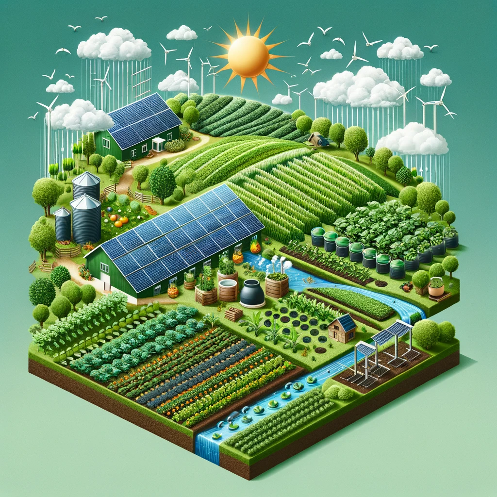

Cultivate Your Fields, Harvest Success

Accurate Predictions: Visualizing a dashboard that provides detailed forecasts and data analysis to support informed agricultural decisions.
Seamless Translation: Showcasing the inclusivity of the platform with a farmer using a tablet that displays multiple language options, emphasizing easy access for all.

Sustainable Farming Practices: Illustrating eco-friendly agricultural practices with a farm that integrates solar panels, rainwater harvesting, and composting, underlining the commitment to sustainability.
Expert Guidance and Support: Depicting a farmer in a field consulting real-time advice and analytics on a digital device, symbolizing the platform's role in enhancing agricultural productivity through expert insights.